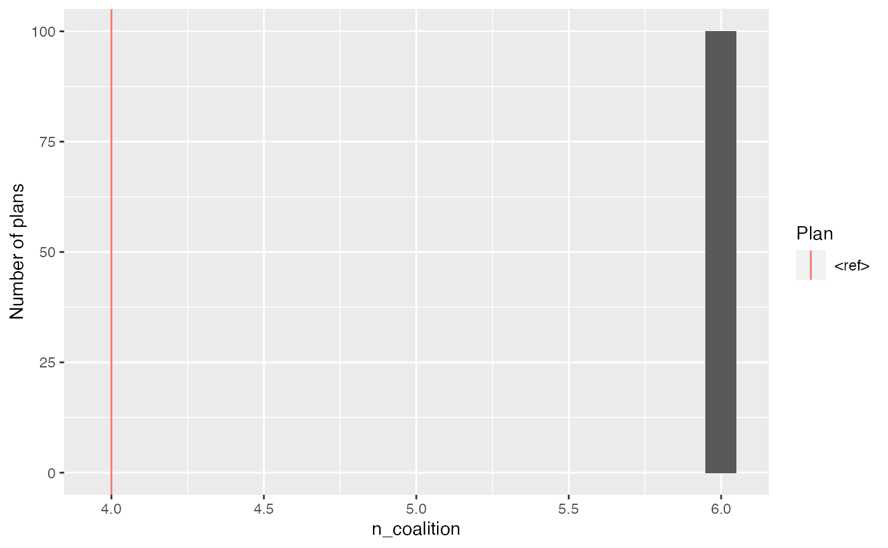
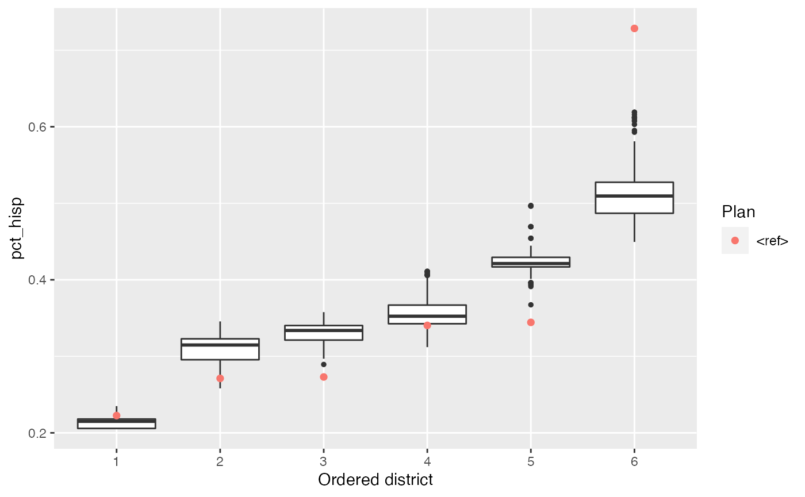

Setup
We begin by loading tidyverse and the redist library, and reading in our shapefile.
library(tidyverse)
library(redist)
data(east_tx)
print(texas_shp)
#> Simple feature collection with 3138 features and 13 fields
#> geometry type: MULTIPOLYGON
#> dimension: XY
#> bbox: xmin: -414696.7 ymin: 310898.7 xmax: 237123.4 ymax: 993178.7
#> projected CRS: NAD83 / Conus Albers
#> # A tibble: 3,138 x 14
#> county id geometry cd pop black hisp white vap
#> <chr> <chr> <MULTIPOLYGON [m]> <int> <dbl> <dbl> <dbl> <dbl> <dbl>
#> 1 029 4802… (((-225344.9 724204.5, -… 28 355 29 127 178 291
#> 2 029 4802… (((-221901.9 718229.7, -… 28 153 31 87 20 29
#> 3 029 4802… (((-221901.2 716816.7, -… 28 958 164 297 440 643
#> 4 029 4802… (((-225942 703767.3, -22… 28 3895 174 1126 2528 2931
#> 5 029 4802… (((-224111.1 703124.3, -… 28 1588 40 371 1165 1227
#> 6 029 4802… (((-229268.4 701654.1, -… 28 328 3 93 230 276
#> 7 029 4802… (((-226356.7 715765.3, -… 28 7499 2274 3220 1581 4829
#> 8 029 4802… (((-224091.7 715995.9, -… 28 10 1 3 6 8
#> 9 029 4802… (((-231919.2 706761.5, -… 28 1087 251 655 157 787
#> 10 029 4802… (((-217227.7 710079.4, -… 28 54 7 8 39 45
#> # … with 3,128 more rows, and 5 more variables: bvap <dbl>, hvap <dbl>,
#> # wvap <dbl>, dem <int>, gop <int>Specifying the Redistricting Problem
The first thing we do is to create a redist_map object, which is essentially a data frame along with an adjacency graph and a little extra metadata about the redistricting problem at hand. It’s important to create this object early on, since data operations like filtering and summarizing will affect the graph structure, number of district, and population constraints.
Here, the existing district assignment is stored in the cd column. We provide let redist_map know about this by providing the existin_col argument, and we use max(cd) to count the total number of districts.
tx = redist_map(texas_shp, pop_tol=0.05, existing_col=cd)
print(tx)
#> A redist_map object with 3138 units and 15 fields
#> To be partitioned into 15 districts with population between 698,224.4 - 5.0% and 698,224.4 + 5.0%
#> With geometry:
#> bbox: xmin: -414696.7 ymin: 310898.7 xmax: 237123.4 ymax: 993178.7
#> projected CRS: NAD83 / Conus Albers
#> # A tibble: 3,138 x 15
#> county id geometry cd pop black hisp white vap
#> * <chr> <chr> <MULTIPOLYGON [m]> <int> <dbl> <dbl> <dbl> <dbl> <dbl>
#> 1 029 4802… (((-225344.9 724204.5, -… 28 355 29 127 178 291
#> 2 029 4802… (((-221901.9 718229.7, -… 28 153 31 87 20 29
#> 3 029 4802… (((-221901.2 716816.7, -… 28 958 164 297 440 643
#> 4 029 4802… (((-225942 703767.3, -22… 28 3895 174 1126 2528 2931
#> 5 029 4802… (((-224111.1 703124.3, -… 28 1588 40 371 1165 1227
#> 6 029 4802… (((-229268.4 701654.1, -… 28 328 3 93 230 276
#> 7 029 4802… (((-226356.7 715765.3, -… 28 7499 2274 3220 1581 4829
#> 8 029 4802… (((-224091.7 715995.9, -… 28 10 1 3 6 8
#> 9 029 4802… (((-231919.2 706761.5, -… 28 1087 251 655 157 787
#> 10 029 4802… (((-217227.7 710079.4, -… 28 54 7 8 39 45
#> # … with 3,128 more rows, and 6 more variables: bvap <dbl>, hvap <dbl>,
#> # wvap <dbl>, dem <int>, gop <int>, graph <list>Our original shapefile stored its geographic information in terms of latitude and longitude. While common, this can cause problems for some of the geographic operations used in the analysis process, so by default redist_map will reproject the shapefile geometry to a new coordinate system. Whether to do this and which coordinate system to use can be controlled using the planarize argument.
Subsetting
Suppose that we want to focus our analysis on the Houston area, which for our purposes means the 2nd, 7th, 9th, 18th, 22nd, and 29th congressional districts. We can do this simply by using dplyr’s filter() function.
houston_area = filter(tx, cd %in% c(2, 7, 9, 18, 22, 29))
print(houston_area)
#> A redist_map object with 937 units and 15 fields
#> To be partitioned into 6 districts with population between 698,224.4 - 5.0% and 698,224.4 + 5.0%
#> With geometry:
#> bbox: xmin: -8610.921 ymin: 687624.4 xmax: 94290.38 ymax: 788347.1
#> projected CRS: NAD83 / Conus Albers
#> # A tibble: 937 x 15
#> county id geometry cd pop black hisp white vap
#> * <chr> <chr> <MULTIPOLYGON [m]> <int> <dbl> <dbl> <dbl> <dbl> <dbl>
#> 1 039 4803… (((56463.9 723325.4, 573… 22 9997 2808 1031 2925 6940
#> 2 039 4803… (((73701.52 703342.2, 74… 22 3653 190 1061 2257 2718
#> 3 039 4803… (((69637.14 720067.7, 70… 22 7263 591 1516 4691 4927
#> 4 039 4803… (((62778.08 723607.8, 63… 22 5196 488 2015 2381 3828
#> 5 039 4803… (((63199.55 720686.6, 66… 22 7303 1969 1761 2976 4991
#> 6 039 4803… (((68047.92 724871.3, 69… 22 3791 188 1466 2006 2770
#> 7 039 4803… (((67244.84 719969, 6722… 22 4816 541 1594 2454 3308
#> 8 039 4803… (((59370.14 715476.7, 59… 22 5541 220 1501 3668 4165
#> 9 039 4803… (((55768.81 696116.4, 55… 22 3947 282 1073 1979 2883
#> 10 039 4803… (((68627.5 711720.8, 692… 22 6124 118 2131 3773 4463
#> # … with 927 more rows, and 6 more variables: bvap <dbl>, hvap <dbl>,
#> # wvap <dbl>, dem <int>, gop <int>, graph <list>Behind the scenes, redist has adjusted the adjacency graph to remove the precincts that were filtered away. It has also adjusted the number of districts and the population bounds.
We can easily plot this new map, either by congressional district or by any other quantity of interest.
plot(houston_area, edges=F, centroids=F) # hide the hundreds of graph edges and vertices
plot(houston_area, hisp/pop)
Merging
If we want to base our analysis on a geographical unit other than precincts, we use the merge_by() function, which calls dplyr’s group_by() and summarize() in the background. It also tries to intelligently summarize the other columns in the data frame—adding up the population in each county, for instance. By default, merge_by() will also group by the current congressional districts, if they are provided, to avoid erasing these lines.
houston_counties = houston_area %>%
merge_by(county, drop_geom=FALSE)
print(houston_counties)
#> A redist_map object with 9 units and 15 fields
#> To be partitioned into 6 districts with population between 698,224.4 - 5.0% and 698,224.4 + 5.0%
#> Merged from another map with reindexing: int [1:937] 1 1 1 1 1 ...
#> With geometry:
#> bbox: xmin: -8610.921 ymin: 687624.4 xmax: 94290.38 ymax: 788347.1
#> projected CRS: NAD83 / Conus Albers
#> # A tibble: 9 x 15
#> # Groups: county [3]
#> county cd pop black hisp white vap bvap hvap wvap dem
#> * <chr> <int> <dbl> <dbl> <dbl> <dbl> <dbl> <dbl> <dbl> <dbl> <int>
#> 1 039 22 156654 19318 40012 79274 110649 13319 25286 60040 24205
#> 2 157 9 145730 69603 39719 19598 102332 48129 25602 16358 34129
#> 3 157 22 439645 53664 99248 192082 309208 36848 63714 142711 73263
#> 4 201 2 705967 67459 217675 357581 523630 47485 142955 286983 114587
#> 5 201 7 699765 77708 211140 331256 520299 55540 141088 265013 124112
#> 6 201 9 552240 199127 221020 60303 398114 143132 144769 53043 102918
#> 7 201 18 690022 276331 266736 114318 499911 202616 172154 100367 146444
#> 8 201 22 105397 13045 33105 45417 77620 9176 21728 36830 14781
#> 9 201 29 695465 66741 531650 81193 469405 46629 341966 69148 92027
#> # … with 4 more variables: gop <int>, id <chr>, geometry <GEOMETRY [m]>,
#> # graph <list>
plot(houston_counties, hisp/pop)
We specify drop_geom=FALSE so that the shapefile geometries are also merged. Since this is a time-consuming process and is not necessary for redistricting analysis, by default merge_by() drops the shapefile geometry.
If more fine-grained control is needed than is provided by merge_by(), you can always use group_by() and summarize(), which will still make the appropriate modifications to the adjacency graph.
Another common use of merge_by() is for creating district “cores”: gluing precincts in the “core” of an area together, to ensure that they stay together throughout redistricting. This has the effect of imposing a status quo constraint when applied to existing districts. Here, any precincts that are not within 1 precinct of the district borders will be merged into the district cores.
houston_cores = houston_area %>%
mutate(cd_cores = make_cores(within=1)) %>%
merge_by(cd_cores, drop_geom=F)
print(houston_cores)
#> A redist_map object with 475 units and 16 fields
#> To be partitioned into 6 districts with population between 698,224.4 - 5.0% and 698,224.4 + 5.0%
#> Merged from another map with reindexing: int [1:937] 220 218 218 231 218 ...
#> With geometry:
#> bbox: xmin: -8610.921 ymin: 687624.4 xmax: 94290.38 ymax: 788347.1
#> projected CRS: NAD83 / Conus Albers
#> # A tibble: 475 x 16
#> # Groups: cd_cores [475]
#> cd_cores cd pop black hisp white vap bvap hvap wvap dem gop
#> * <int> <int> <dbl> <dbl> <dbl> <dbl> <dbl> <dbl> <dbl> <dbl> <int> <int>
#> 1 1 18 85593 38236 35699 6314 57288 25678 22431 5378 13219 2267
#> 2 2 18 0 0 0 0 0 0 0 0 1424 1889
#> 3 3 18 0 0 0 0 0 0 0 0 0 0
#> 4 4 18 0 0 0 0 0 0 0 0 469 714
#> 5 5 18 59703 41291 16490 1228 43197 31365 10251 1088 17993 769
#> 6 6 18 3909 2981 841 45 2854 2260 517 41 1157 36
#> 7 7 18 3013 1967 986 34 2159 1525 590 26 861 29
#> 8 8 18 19291 13933 2100 2152 16071 11475 1493 2056 5726 394
#> 9 9 18 91896 35243 37809 15189 64662 25157 23687 13048 19540 7037
#> 10 10 18 568 169 125 257 559 166 122 255 81 36
#> # … with 465 more rows, and 4 more variables: county <chr>, id <chr>,
#> # geometry <GEOMETRY [m]>, graph <list>
plot(houston_cores, centroids=F)
Simulating and Analyzing Plans
After preprocessing the map to focus on the redistricting problem of interest, we are ready to run the redistricting simulation. The recommended simulation function is redist_smc, which uses a Sequential Monte Carlo (SMC) algorithm.1
houston_plans = redist_smc(houston_cores, 100, counties=county) %>%
add_reference(houston_cores$cd)
#> Sampling 100 475-unit maps with 6 districts and population between 663313 and 733136.
#> Ensuring no more than 5 splits of the 6 administrative units.
#> Making split 1 of 5
#> Using k = 8
#> Iteration 10 / 100
#> Iteration 20 / 100
#> Iteration 30 / 100
#> Iteration 40 / 100
#> Iteration 50 / 100
#> Iteration 60 / 100
#> Iteration 70 / 100
#> Iteration 80 / 100
#> Iteration 90 / 100
#> Iteration 100 / 100
#> 32.2% acceptance rate.
#> Resampling effective sample size: 98.5 (98.5% efficiency).
#> Making split 2 of 5
#> Using k = 8
#> Iteration 10 / 100
#> Iteration 20 / 100
#> Iteration 30 / 100
#> Iteration 40 / 100
#> Iteration 50 / 100
#> Iteration 60 / 100
#> Iteration 70 / 100
#> Iteration 80 / 100
#> Iteration 90 / 100
#> Iteration 100 / 100
#> 30.2% acceptance rate.
#> Resampling effective sample size: 98.3 (98.3% efficiency).
#> Making split 3 of 5
#> Using k = 7
#> Iteration 10 / 100
#> Iteration 20 / 100
#> Iteration 30 / 100
#> Iteration 40 / 100
#> Iteration 50 / 100
#> Iteration 60 / 100
#> Iteration 70 / 100
#> Iteration 80 / 100
#> Iteration 90 / 100
#> Iteration 100 / 100
#> 30.1% acceptance rate.
#> Resampling effective sample size: 94.6 (94.6% efficiency).
#> Making split 4 of 5
#> Using k = 7
#> Iteration 10 / 100
#> Iteration 20 / 100
#> Iteration 30 / 100
#> Iteration 40 / 100
#> Iteration 50 / 100
#> Iteration 60 / 100
#> Iteration 70 / 100
#> Iteration 80 / 100
#> Iteration 90 / 100
#> Iteration 100 / 100
#> 21.7% acceptance rate.
#> Resampling effective sample size: 93.8 (93.8% efficiency).
#> Making split 5 of 5
#> Using k = 2
#> Iteration 10 / 100
#> Iteration 20 / 100
#> Iteration 30 / 100
#> Iteration 40 / 100
#> Iteration 50 / 100
#> Iteration 60 / 100
#> Iteration 70 / 100
#> Iteration 80 / 100
#> Iteration 90 / 100
#> Iteration 100 / 100
#> 5.1% acceptance rate.
#> Resampling effective sample size: 98.2 (98.2% efficiency).
print(houston_plans)
#> 100 sampled plans and 1 reference plan with 6 districts from a 475-unit map,
#> drawn using Sequential Monte Carlo
#> Merged from another map with reindexing: int [1:937] 220 218 218 231 218 ...
#> With plans resampled from weights
#> Plans matrix: num [1:475, 1:101] 4 4 4 4 4 4 4 4 4 4 ...
#> # A tibble: 606 x 3
#> draw district pop
#> <fct> <int> <dbl>
#> 1 <ref> 1 705967
#> 2 <ref> 2 699765
#> 3 <ref> 3 697970
#> 4 <ref> 4 690022
#> 5 <ref> 5 701696
#> 6 <ref> 6 695465
#> 7 1 1 683533
#> 8 1 2 714720
#> 9 1 3 721902
#> 10 1 4 667996
#> # … with 596 more rowsWe can then easily add summary statistics for each district. The distr_compactness and group_frac functions will implicitly reference the simulated plans matrix when called inside mutate().
houston_plans = houston_plans %>%
mutate(comp = distr_compactness(houston_cores),
pct_hisp = group_frac(houston_cores, hvap, vap),
pct_black = group_frac(houston_cores, bvap, vap),
pct_white = group_frac(houston_cores, wvap, vap),
pct_min = 1 - pct_white)
print(houston_plans)
#> 100 sampled plans and 1 reference plan with 6 districts from a 475-unit map,
#> drawn using Sequential Monte Carlo
#> Merged from another map with reindexing: int [1:937] 220 218 218 231 218 ...
#> With plans resampled from weights
#> Plans matrix: num [1:475, 1:101] 4 4 4 4 4 4 4 4 4 4 ...
#> # A tibble: 606 x 8
#> draw district pop comp pct_hisp pct_black pct_white pct_min
#> <fct> <int> <dbl> <dbl> <dbl> <dbl> <dbl> <dbl>
#> 1 <ref> 1 705967 874 0.273 0.0907 0.548 0.452
#> 2 <ref> 2 699765 874 0.271 0.107 0.509 0.491
#> 3 <ref> 3 697970 874 0.340 0.382 0.139 0.861
#> 4 <ref> 4 690022 874 0.344 0.405 0.201 0.799
#> 5 <ref> 5 701696 874 0.223 0.119 0.482 0.518
#> 6 <ref> 6 695465 874 0.729 0.0993 0.147 0.853
#> 7 1 1 683533 378 0.205 0.165 0.439 0.561
#> 8 1 2 714720 378 0.462 0.186 0.281 0.719
#> 9 1 3 721902 378 0.323 0.125 0.443 0.557
#> 10 1 4 667996 378 0.411 0.214 0.328 0.672
#> # … with 596 more rowsFrom there, it’s easy to summary statistics by plan.
min_distr = group_by(houston_plans, draw) %>%
summarize(n_black = sum(pct_black >= 0.5),
n_hisp = sum(pct_hisp >= 0.5),
n_coalition = sum(pct_min >= 0.5))
print(min_distr)
#> 100 sampled plans and 1 reference plan with 6 districts from a 475-unit map,
#> drawn using Sequential Monte Carlo
#> Merged from another map with reindexing: int [1:937] 220 218 218 231 218 ...
#> With plans resampled from weights
#> Plans matrix: num [1:475, 1:101] 4 4 4 4 4 4 4 4 4 4 ...
#> # A tibble: 101 x 4
#> draw n_black n_hisp n_coalition
#> * <fct> <int> <int> <int>
#> 1 <ref> 0 1 4
#> 2 1 0 0 6
#> 3 2 0 1 6
#> 4 3 0 1 6
#> 5 4 0 1 6
#> 6 5 0 1 6
#> 7 6 0 0 6
#> 8 7 0 1 6
#> 9 8 0 0 6
#> 10 9 0 1 6
#> # … with 91 more rowsAnd redist provides several useful plotting functions. By default, plot calls hist, which makes a histogram of a quantity of interest along with a reference line for each reference plan.
# ggplots with nice defaults and labels
plot(min_distr, n_coalition)
plot(houston_plans, pct_hisp, type="distr_qtys")
We can also re-index the plans back to the original, un-merged map.
houston_orig_plans = pullback(houston_plans)
print(houston_orig_plans)
#> 100 sampled plans and 1 reference plan with 6 districts from a 937-unit map,
#> drawn using Sequential Monte Carlo
#> With plans resampled from weights
#> Plans matrix: num [1:937, 1:101] 5 5 5 5 5 5 5 5 5 5 ...
#> # A tibble: 606 x 8
#> draw district pop comp pct_hisp pct_black pct_white pct_min
#> <fct> <int> <dbl> <dbl> <dbl> <dbl> <dbl> <dbl>
#> 1 <ref> 1 705967 874 0.273 0.0907 0.548 0.452
#> 2 <ref> 2 699765 874 0.271 0.107 0.509 0.491
#> 3 <ref> 3 697970 874 0.340 0.382 0.139 0.861
#> 4 <ref> 4 690022 874 0.344 0.405 0.201 0.799
#> 5 <ref> 5 701696 874 0.223 0.119 0.482 0.518
#> 6 <ref> 6 695465 874 0.729 0.0993 0.147 0.853
#> 7 1 1 683533 378 0.205 0.165 0.439 0.561
#> 8 1 2 714720 378 0.462 0.186 0.281 0.719
#> 9 1 3 721902 378 0.323 0.125 0.443 0.557
#> 10 1 4 667996 378 0.411 0.214 0.328 0.672
#> # … with 596 more rows
plot(houston_orig_plans, type="plan", draw=5, geom=houston_area)
All Together
A minimum working example for the ‘signature of gerrymandering’.
houston = texas_shp %>%
redist_map(pop_tol=0.05, existing_col=cd) %>%
filter(cd %in% c(2, 7, 9, 18, 22, 29)) %>% # filter to Houston area
mutate(cd_cores = make_cores(within=1)) %>%
merge_by(cd_cores)
houston_plans = redist_smc(houston, 100, counties=county) %>%
add_reference(houston$cd) %>%
mutate(pct_hisp = group_frac(houston, hisp, pop))
#> Sampling 100 475-unit maps with 6 districts and population between 663313 and 733136.
#> Ensuring no more than 5 splits of the 6 administrative units.
#> Making split 1 of 5
#> Using k = 7
#> Iteration 10 / 100
#> Iteration 20 / 100
#> Iteration 30 / 100
#> Iteration 40 / 100
#> Iteration 50 / 100
#> Iteration 60 / 100
#> Iteration 70 / 100
#> Iteration 80 / 100
#> Iteration 90 / 100
#> Iteration 100 / 100
#> 41.5% acceptance rate.
#> Resampling effective sample size: 98.4 (98.4% efficiency).
#> Making split 2 of 5
#> Using k = 8
#> Iteration 10 / 100
#> Iteration 20 / 100
#> Iteration 30 / 100
#> Iteration 40 / 100
#> Iteration 50 / 100
#> Iteration 60 / 100
#> Iteration 70 / 100
#> Iteration 80 / 100
#> Iteration 90 / 100
#> Iteration 100 / 100
#> 25.6% acceptance rate.
#> Resampling effective sample size: 98.6 (98.6% efficiency).
#> Making split 3 of 5
#> Using k = 7
#> Iteration 10 / 100
#> Iteration 20 / 100
#> Iteration 30 / 100
#> Iteration 40 / 100
#> Iteration 50 / 100
#> Iteration 60 / 100
#> Iteration 70 / 100
#> Iteration 80 / 100
#> Iteration 90 / 100
#> Iteration 100 / 100
#> 23.4% acceptance rate.
#> Resampling effective sample size: 96.5 (96.5% efficiency).
#> Making split 4 of 5
#> Using k = 6
#> Iteration 10 / 100
#> Iteration 20 / 100
#> Iteration 30 / 100
#> Iteration 40 / 100
#> Iteration 50 / 100
#> Iteration 60 / 100
#> Iteration 70 / 100
#> Iteration 80 / 100
#> Iteration 90 / 100
#> Iteration 100 / 100
#> 26.9% acceptance rate.
#> Resampling effective sample size: 93.3 (93.3% efficiency).
#> Making split 5 of 5
#> Using k = 4
#> Iteration 10 / 100
#> Iteration 20 / 100
#> Iteration 30 / 100
#> Iteration 40 / 100
#> Iteration 50 / 100
#> Iteration 60 / 100
#> Iteration 70 / 100
#> Iteration 80 / 100
#> Iteration 90 / 100
#> Iteration 100 / 100
#> 4.6% acceptance rate.
#> Resampling effective sample size: 96.5 (96.5% efficiency).
plot(houston_plans, type="distr_qtys", pct_hisp)
McCartan, C., & Imai, K. (2020). Sequential Monte Carlo for Sampling Balanced and Compact Redistricting Plans. Available at https://imai.fas.harvard.edu/research/files/SMCredist.pdf.↩︎